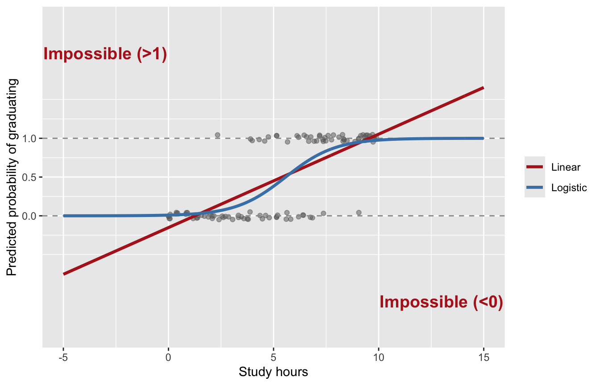
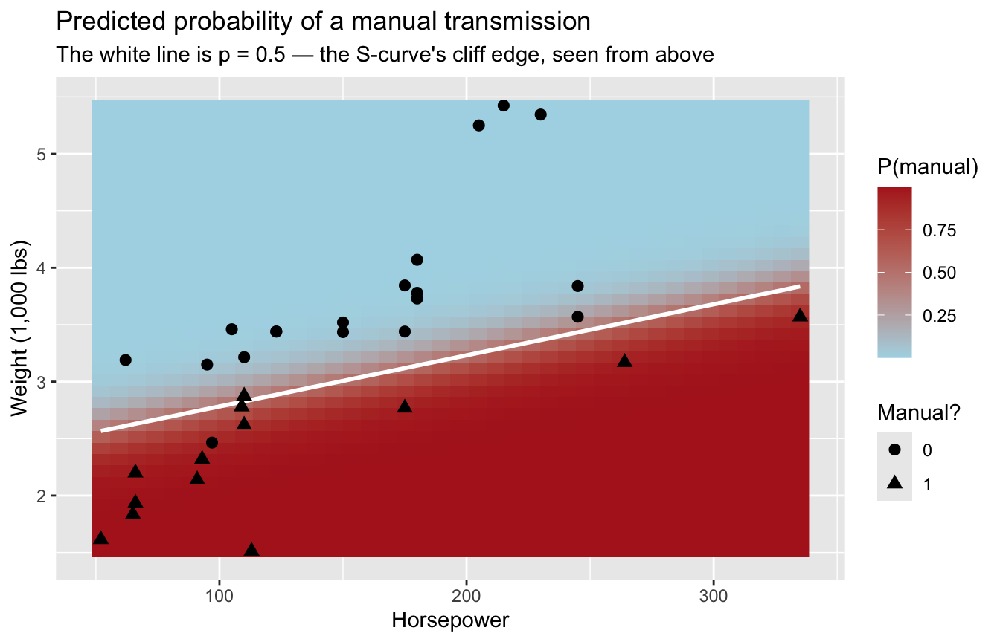
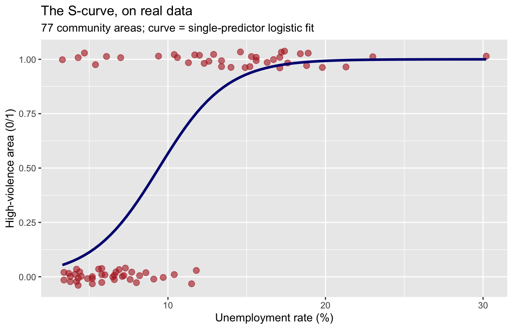

Demo Walkthrough · Session 12
Logistic regression — odds, odds ratios, predicted probabilities, and the Bayesian version
What this page is. The Session 12 lecture demos, written down step by step. Run the setup chunk once, then work top to bottom — every demo reproduces what happened on screen. Use this page to catch up after a missed class, or to re-run the lecture at your own pace.
What you’ll build
- A demonstration of why
lm()breaks on a yes/no outcome — impossible predictions, caught in the act - The ladder that fixes it: probability → odds → log-odds, plus the odds-ratio Rosetta Stone
-
glm(family = binomial)on 32 cars: exponentiate the coefficients, then predict actual cases - The same workflow on real data — what separates Chicago’s high-violence community areas — plus a by-hand
plogis()check that demystifiespredict() - The Bayesian version with
brms: posterior odds ratios, and the reporting sentence each tradition licenses
Setup
brms is the same package you installed for Lab 8 — nothing new to install. Same reminder as always: the first brm() of a session pauses at Compiling Stan program... for a minute before sampling starts. It is not frozen.
Was an arrest made? Does the defendant fail to appear? Is the parolee re-arrested within three years? Is this a high-violence neighborhood? Every model so far predicted a number — a crime rate, an incident hour. Logistic regression predicts a yes/no, and its currency is probability (0 to 1), expressed along the way as odds and log-odds. This session also pays off a Session 1 promise: the opening-week bank-robbery model — patrol cars sent to the West Zone off a coefficient table nobody could read yet — was logistic regression all along, its mysterious estimate column just log-odds, one exp() away from sense. The Session 12 slides reopen that exact model with today’s eyes (“The Machinery, Reopened”).
1 · Watch linear regression fail
Predicting graduated the academy (yes/no) from study hours:
set.seed(42) # kept from the lecture — same simulated recruits as the slides
recruits <- tibble(
study_hours = runif(100, 0, 10),
prob_grad = 1 / (1 + exp(-(-4 + 0.8 * study_hours))),
graduated = rbinom(100, 1, prob_grad)
)
model_linear <- lm(graduated ~ study_hours, data = recruits)
model_logit <- glm(graduated ~ study_hours, data = recruits, family = binomial)Ask the linear model about recruits at the edges:
“Probabilities” of −0.75 and 1.66. Those cannot exist. See the whole picture — linear regression is a straight road that runs forever; logistic regression is a curved hill that flattens at 0 and 1:
grid_hours <- tibble(study_hours = seq(-5, 15, length.out = 400)) |>
mutate(
Linear = predict(model_linear, newdata = pick(study_hours)),
Logistic = predict(model_logit, newdata = pick(study_hours),
type = "response")
) |>
pivot_longer(c(Linear, Logistic), names_to = "model", values_to = "pred")
ggplot(recruits, aes(study_hours, graduated)) +
geom_jitter(height = 0.05, width = 0, alpha = 0.5, color = "grey40") +
geom_hline(yintercept = c(0, 1), linetype = 2, color = "grey60") +
geom_line(data = grid_hours, aes(y = pred, color = model), linewidth = 1.2) +
scale_color_manual(values = c("firebrick", "steelblue")) +
scale_y_continuous(limits = c(-1.5, 2.5), breaks = seq(0, 1, 0.5)) +
annotate("text", x = -3, y = 2.1, label = "Impossible (>1)",
color = "firebrick", fontface = "bold", size = 5) +
annotate("text", x = 13, y = -1.1, label = "Impossible (<0)",
color = "firebrick", fontface = "bold", size = 5) +
labs(x = "Study hours", y = "Predicted probability of graduating", color = NULL)
Inside the middle of the data the two lines nearly agree; the damage is at the edges — exactly where predictions get used (“what about a recruit who studies a lot?”). The fix: don’t model the probability directly; model something built from it that a straight line can live on.
2 · The ladder: probability → odds → log-odds
Suppose 3 out of 4 parolees complete supervision: p = 0.75. Then odds = p / (1 − p) = 0.75 / 0.25 = 3 — “three to one.” Odds run 0 to ∞; log-odds run −∞ to +∞. That’s a scale a straight line can live on. Climb the ladder for a few probabilities:
# A tibble: 3 × 3
probability odds log_odds
<dbl> <dbl> <dbl>
1 0.25 0.333 -1.10
2 0.5 1 0
3 0.75 3 1.10The logistic model treats the log-odds as its outcome:
\[\text{logit}(p) = \ln\!\left(\frac{p}{1-p}\right) = b_0 + b_1 X_1 + b_2 X_2\]
Same intercept, same slopes, same “holding the others constant” as Session 11. The line predicts log-odds, which convert back to a probability that politely stays between 0 and 1 — the curved hill.
But the coefficients are log-odds, and nobody thinks in log-odds. So what do we do? EXPONENTIATE. exp(coefficient) is the odds ratio: multiply the odds of the outcome by this much for each one-unit increase in X, holding the other predictors constant.
The Rosetta Stone, shrink side — negative log-odds → ratio below 1 → odds shrink:
| Log-odds coefficient (β) | Odds ratio (eβ) | Effect on odds | Intuitive interpretation |
|---|---|---|---|
| −2.0 | 0.14 | ↓ 86% | Odds are 86% lower than baseline |
| −1.0 | 0.37 | ↓ 63% | Odds are 63% lower than baseline |
| −0.5 | 0.61 | ↓ 39% | Odds are 39% lower than baseline |
| 0.0 | 1.00 | No change | Odds unchanged |
And the grow side — positive log-odds → ratio above 1 → odds grow:
| Log-odds coefficient (β) | Odds ratio (eβ) | Effect on odds | Intuitive interpretation |
|---|---|---|---|
| 0.0 | 1.00 | No change | Odds unchanged |
| 0.3 | 1.35 | ↑ 35% | Odds are 35% higher than baseline |
| 0.7 | 2.01 | ↑ 101% | Odds are about twice as high |
| 1.0 | 2.72 | ↑ 172% | Odds are 2.7× higher |
| 2.0 | 7.39 | ↑ 639% | Odds are over seven times higher |
3 · Fitting it: glm(family = binomial)
Toy data first — 32 cars from a 1974 Motor Trend issue (mtcars, built into R), predicting manual transmission (1) vs. automatic (0) from horsepower and weight. Small enough to check every number; real CJ data below.
cars_df <- mtcars |>
rownames_to_column("car") |>
mutate(am = as.factor(am)) # 0 = automatic, 1 = manual
model_freq <- glm(am ~ hp + wt, data = cars_df, family = binomial)
summary(model_freq)
Call:
glm(formula = am ~ hp + wt, family = binomial, data = cars_df)
Coefficients:
Estimate Std. Error z value Pr(>|z|)
(Intercept) 18.86630 7.44356 2.535 0.01126 *
hp 0.03626 0.01773 2.044 0.04091 *
wt -8.08348 3.06868 -2.634 0.00843 **
---
Signif. codes: 0 '***' 0.001 '**' 0.01 '*' 0.05 '.' 0.1 ' ' 1
(Dispersion parameter for binomial family taken to be 1)
Null deviance: 43.230 on 31 degrees of freedom
Residual deviance: 10.059 on 29 degrees of freedom
AIC: 16.059
Number of Fisher Scoring iterations: 8glm() is the generalized linear model — regression’s family business — and family = binomial is the switch that makes it logistic. The estimates are log-odds. Exponentiate:
-
hp: log-odds 0.036 → odds ratio 1.04 — each additional horsepower multiplies the odds of a manual transmission by about 1.04 (+3.7%), holding weight constant -
wt: log-odds −8.08 → odds ratio 0.0003 — each additional 1,000 lbs cuts the odds by about 99.97%, holding horsepower constant - Wildly different sizes partly because the units differ: one horsepower is a nudge; a thousand pounds is a different car (Session 11’s units lesson, again)
From effects to cases: predict()
Odds ratios describe effects. For an actual case, ask for the probability directly:
car hp wt p_manual
1 Cadillac Fleetwood 205 5.250 9.787752e-08
2 Honda Civic 52 1.615 9.995459e-01type = "response" returns probabilities: the light Civic is a near-certain manual (99.95%); the 5,250-lb Fleetwood’s probability of a manual has seven zeros after the decimal. Report both: odds ratios for effects, predicted probabilities for cases.
The curved surface, seen from above
Session 11’s flat plane, bent: with two predictors, the logistic model is a curved sheet — a plateau near probability 1, a floor near 0, and an S-shaped cliff between them. Ask the model for a prediction at every (hp, wt) combination and look straight down at the surface:
grid <- expand_grid(
hp = seq(min(cars_df$hp), max(cars_df$hp), length.out = 40),
wt = seq(min(cars_df$wt), max(cars_df$wt), length.out = 40)
)
grid$prob <- predict(model_freq, newdata = grid, type = "response")
ggplot(grid, aes(hp, wt)) +
geom_raster(aes(fill = prob)) +
geom_contour(aes(z = prob), breaks = 0.5, color = "white", linewidth = 1) +
geom_point(data = cars_df, aes(shape = am), color = "black", size = 2.5) +
scale_fill_gradient(low = "lightblue", high = "firebrick") +
labs(title = "Predicted probability of a manual transmission",
subtitle = "The white line is p = 0.5 — the S-curve's cliff edge, seen from above",
x = "Horsepower", y = "Weight (1,000 lbs)",
fill = "P(manual)", shape = "Manual?")
Color is the surface’s height; the tight color transition is where the cliff lives. For the spinnable 3-D version — and the recorded guided tour — open the Session 12 slides.
4 · Real data: Chicago’s high-violence areas
What separates Chicago’s high-violence community areas from the rest? The outcome ships in the file: is the area’s violent-crime rate above the citywide median?
areas |> count(high_violence)# A tibble: 2 × 2
high_violence n
<lgl> <int>
1 FALSE 39
2 TRUE 38The line that built it — areas |> mutate(high_violence = violent_rate > median(violent_rate)) — already ran for you. R treats TRUE as 1 and FALSE as 0, so a logical column drops straight into glm(); if your project outcome isn’t binary yet, it may be one mutate() away too. One caution: cutting a continuous variable in half throws away information — defensible when the yes/no version is the question you actually care about.
Look first (always) — one predictor against the outcome, with the fitted logistic curve:
ggplot(areas, aes(unemployment_rate, as.numeric(high_violence))) +
geom_jitter(height = 0.04, width = 0, size = 2.5, alpha = 0.6,
color = "firebrick") +
geom_smooth(method = "glm", method.args = list(family = "binomial"),
se = FALSE, color = "navy", linewidth = 1.2) +
labs(title = "The S-curve, on real data",
subtitle = "77 community areas; curve = single-predictor logistic fit",
x = "Unemployment rate (%)", y = "High-violence area (0/1)")
Now the two-predictor model — unemployment and vacant housing, both plausible markers of concentrated disadvantage:
Call:
glm(formula = high_violence ~ unemployment_rate + pct_vacant,
family = binomial, data = areas)
Coefficients:
Estimate Std. Error z value Pr(>|z|)
(Intercept) -5.8208 1.3747 -4.234 2.29e-05 ***
unemployment_rate 0.3699 0.1100 3.363 0.000771 ***
pct_vacant 0.2849 0.1428 1.995 0.046007 *
---
Signif. codes: 0 '***' 0.001 '**' 0.01 '*' 0.05 '.' 0.1 ' ' 1
(Dispersion parameter for binomial family taken to be 1)
Null deviance: 106.73 on 76 degrees of freedom
Residual deviance: 52.06 on 74 degrees of freedom
AIC: 58.06
Number of Fisher Scoring iterations: 6 OR 2.5 % 97.5 %
(Intercept) 0.002965276 0.0001115289 0.02846386
unemployment_rate 1.447590364 1.1934960639 1.84714872
pct_vacant 1.329619347 1.0371047252 1.83804694- Unemployment: OR 1.45 [1.19, 1.85] — each additional point of unemployment multiplies an area’s odds of high-violence status by about 1.45 (+45%), holding vacancy constant
- Vacancy: OR 1.33 [1.04, 1.84] — +33% odds per point, holding unemployment constant
- For a ratio, no effect = 1, not 0 — both intervals exclude it. And these are associations, not causes: nobody randomly assigned unemployment to neighborhoods
Coefficients into cases
# A tibble: 2 × 4
community unemployment_rate pct_vacant p_high_violence
<chr> <dbl> <dbl> <dbl>
1 Forest Glen 4.2 2.6 0.0286
2 West Garfield Park 18.9 20 0.999 In plain language: for an area like Forest Glen (4.2% unemployment, 2.6% vacant), the model puts the probability of high-violence status at about 3%. For one like West Garfield Park (18.9%, 20.0%), it’s over 99%. That’s a sentence a chief — or a city council — can actually use.
No magic: the plogis() check
predict() is just the ladder run in reverse — plug the predictors into the log-odds line, then squash the result back into [0, 1]. Do Forest Glen by hand:
(Intercept)
0.02856804 Same 0.029 as predict(). plogis() is R’s name for the inverse logit — the function that bends the straight line into the hill.
5 · The Bayesian version
Same formula; family = bernoulli() is brms’s name for a 0/1 outcome — the switch that family = binomial flips in glm(). Everything else is the Session 8 pattern. (In lecture we first ran this machinery on the 32 cars, where the honest posterior intervals came out enormous — with 77 areas they tighten to something usable.) This is the chunk with the compile pause.
Estimate Q2.5 Q97.5
Intercept 0.001792006 7.756542e-05 0.02117534
unemployment_rate 1.492292997 1.219122e+00 1.92093080
pct_vacant 1.366238869 1.035275e+00 1.87703700Both traditions land in the same place: posterior odds ratios near the glm() estimates, credible intervals excluding 1. The prior: we stated none, so these are brms defaults — flat on the coefficients, weakly informative on the intercept. Your project’s Bayesian model will use these too — say so in your methods, one sentence: “brms default priors, 2 chains × 2,000 iterations, seed 705.”
How to report it, in each tradition:
Frequentist: “Each one-point increase in the unemployment rate was associated with 45% higher odds of being a high-violence area (OR = 1.45, 95% CI [1.19, 1.85]), holding vacancy constant. Predicted probabilities ranged from about 3% for the least-disadvantaged areas to over 99% for the most.”
Bayesian: “Given the data and priors, each one-point increase in unemployment multiplied the odds of high-violence status by about 1.5 (posterior mean OR ≈ 1.5, 95% credible interval ≈ [1.2, 1.9]).”
Same three ingredients every time: the effect (as an odds ratio), the uncertainty, and a probability a reader can feel. And say odds when you mean odds — an odds ratio of 1.45 is not “45% more likely.”
Try a variation
- A reentry study reports two log-odds coefficients for re-arrest within 12 months: risk score 0.7 per point, completed programming −0.5. Convert both with
exp()and say each in a sentence a police chief would understand. (Check yourself: one roughly doubles the odds; the other cuts them by about 39%.) - Rebuild the outcome with a harsher cut —
areas |> mutate(top_quartile = violent_rate > quantile(violent_rate, 0.75))— and refitv_modelon it. What happens to the odds ratios and their intervals when only about 19 areas are a “yes”? - Swap
pct_vacantforpct_no_hs_diplomainv_model. Does the unemployment odds ratio move? Connect what you see to Session 11’s lurker lesson. - Pick any other Chicago community area and compute its predicted probability by hand with
plogis(), then check yourself withpredict().